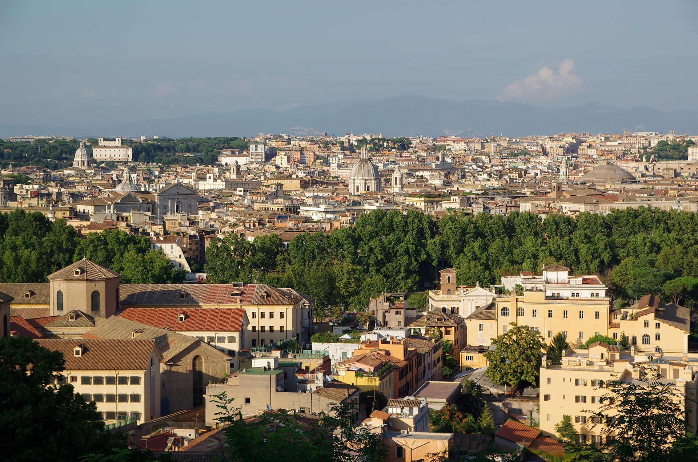

Il centro storico
Il centro storico di Roma è stato riconosciuto, sin dal 1980, patrimonio dell'umanità dall'UNESCO. Esso comprende 14,308 km² di superficie del territorio comunale, quasi la somma della superficie dei 22 rioni (15,4659 km²) che lo compongono racchiusi all'interno delle Mura aureliane (a sinistra del Tevere) e gianicolensi (a destra del fiume), con la sola esclusione di una parte dei rioni Borgo e Prati.
Nell'intera città storica, che fa riferimento ad un territorio più vasto rispetto al centro storico, si riconosce il valore di oltre 25.000 punti di interesse ambientale e archeologico censiti dalla Carta per la Qualità: in virtù di ciò Roma risulta la città con più monumenti al mondo. Il toponimo Centro Storico indica anche la zona urbanistica 1a del I Municipio e il municipio stesso.
Il territorio è diviso in 22 rioni, tutti all'interno delle Mura aureliane e gianicolensi, ad eccezione di Borgo e Prati:
I - Monti
Il suo nome deriva dai sei colli o montes: il Celio, il Cispio, l'Esquilino, l'Oppio, il Quirinale e il Viminale. Vi si trovano il Foro di Cesare, il Foro di Augusto, il Foro di Nerva, il Foro di Traiano, la Domus Aurea, la Basilica di Santa Maria Maggiore, le Terme di Traiano, la Torre delle Milizie e Piazza San Giovanni con la Fontana dell'obelisco Lateranense. Il suo stemma consta di tre monti verdi su sfondo d'argento.
II - Trevi
L'origine del suo nome non è certa, tuttavia l'ipotesi più accreditata è che provenga dall'antico trejo, che sta ad indicare la confluenza di tre vie nella piazzetta dei Crociferi, situata al lato della moderna Piazza di Trevi. Vi si trovano la Fontana di Trevi, la Fontana del Tritone, Palazzo Barberini e Palazzo del Quirinale.
III - Colonna
Il nome deriva dalla Colonna dedicata a Marco Aurelio, detta Antonina, che si trova nell'omonima piazza. Vi si trovano Piazza della Rotonda, Palazzo Montecitorio, sede della Camera dei deputati, e Palazzo Chigi, sede del Governo della Repubblica Italiana. Il suo stemma è una colonna d'argento su sfondo rosso.
IV - Campo Marzio
Il Campo Marzio (Campus Martius) era una zona della Roma antica di circa 2 km², inizialmente esterna ai confini cittadini. Prese il nome dall'ara dedicata a Marte, dio della guerra, innalzata dopo la caduta di Tarquinio il Superbo. Vi si trovano Piazza di Spagna e Piazza del Popolo, la Fontana del porto di Ripetta, il Museo dell'Ara Pacis e l'Orologio ad acqua. Lo stemma è una mezza-luna d'argento in campo azzurro; l'origine del simbolo è ignota.
V - Ponte
Il suo nome deriva dalla presenza di Ponte Sant'Angelo o Ponte Elio, che è appartenuto al rione fino a quando papa Sisto V non lo incorporò nel nuovo rione Borgo. Vi si trovano Piazza dei Coronari, Palazzo Taverna e Palazzo Alberini. Il suo stemma è un ponte.
VI - Parione
Il nome Parione deriva dalla presenza nel rione di un edificio antico, o di una sua parete (paries), che prese nome dal popolo Parietone. Il centro del piccolo rione è Piazza Navona. Vi si trovano Piazza della Chiesa Nuova e il Teatro di Pompeo. Il suo stemma è un Grifo, creatura mitologica greca con la testa d'aquila ed il corpo di leone, simbolo di fierezza e nobiltà.
VII - Regola
Il nome deriva da arenula (ripreso nella moderna Via Arenula), ovvero da quella rena soffice che ancora oggi il fiume Tevere deposita durante le piene, e che ivi formava delle spiagge scomparse in seguito alla costruzione dei Lungotevere. Vi si trovano Campo de' Fiori, Piazza Farnese, la Galleria Spada, Palazzo Farnese e Palazzo Falconieri. Lo stemma del rione è un cervo rampante in campo turchino.
VIII - Sant'Eustachio
Il nome deriva dalla chiesa omonima. Vi si trovano Piazza Sant'Agostino, Palazzo Madama, sede del Senato della Repubblica, Palazzo Vidoni Caffarelli, e Largo di Torre Argentina. Il suo stemma è formato dalla testa di un cervo (simbolo di S. Eustachio) e dal busto di Gesù; le figure sono in oro e lo sfondo è rosso
IX - Pigna
Lo stemma del rione è costituito da una pigna: la leggenda vuole che il nome derivi dalla gigantesca pigna di bronzo ritrovata nel rione e in seguito spostata in Vaticano nel Cortile della Pigna. Tuttavia, nel XII secolo la pigna si trovava già davanti all'antica Basilica di San Pietro, quando il rione non aveva ancora assunto questo nome. Un'altra ipotesi vuole invece che il nome derivi dalla Vigna di Tedemario (un romano che possedeva delle terre nella zona del Circo Flaminio). Vi si trovano il Pantheon, il Vittoriano e Piazza Venezia.
X - Campitelli
Ci sono due versioni sull'origine del nome del rione: secondo la prima esso deriva da Campus telluris, cioè "campo o piazza di terra", secondo l'altra ipotesi invece da Aedes telluris, ovvero "Tempio della dea Terra". Vi si trovano Piazza del Campidoglio, il Foro Romano, il Campidoglio, i Musei capitolini, il Carcere Mamertino, la Casa delle Vestali, l'Insula dell'Ara Coeli. Lo stemma del rione è costituito dalla testa nera di un drago su sfondo bianco. Il simbolo deriva dalla leggenda secondo la quale un drago che infestava il Foro Romano fu cacciato da papa Silvestro I.
XI - Sant'Angelo
È il più piccolo dei rioni. Il nome deriva dalla chiesa di Sant'Angelo in Pescheria. Vi si trovano Piazza dei Calcarari, il Ghetto, il Teatro di Marcello, la Fontana delle Tartarughe e il Portico di Ottavia. Il suo stemma è un angelo su sfondo rosso, con una spada nella mano destra ed una bilancia nella sinistra. La bilancia non si riferisce alla giustizia, ma piuttosto al taglio e alla pesatura del pesce, poiché l'antico mercato del pesce si trovava nel Ghetto.
XII - Ripa
Il nome ha origine dalla zona del Tevere detta Ripa Grande, dove vi era lo scalo fluviale. È considerato il più antico rione, per la presenza di un insediamento pre-romano. Oggi comprende anche il Monte Aventino, situato alle sue spalle. Vi si trovano Piazza della Bocca della Verità, Porta San Sebastiano, l'Area di Sant'Omobono e il Foro Olitorio. Lo stemma del rione è una bianca ruota di timone su sfondo rosso, a ricordare l'antico porto.
XIII - Trastevere
Si trova sulla riva occidentale (riva destra) del Tevere, a sud della Città del Vaticano. Il suo nome deriva dal latino trans Tiberim (al di là del Tevere), che era anche il nome di una delle regioni augustee. Vi si trovano la Fontana dell'Acqua Paola, la Fontana di piazza Mastai, la Fontana di Ponte Sisto e la Casa della Farnesina, la Piazza di Santa Maria in Trastevere architetture religiose come la Basilica di Santa Maria in Trastevere, la Basilica di Santa Cecilia in Trastevere e la Basilica di San Crisogono e il Tempietto di San Pietro in Montorio. È il rione simbolo del "Popolo Romano". Il suo stemma è una testa di leone d'oro su sfondo rosso.
XIV - Borgo
Il nome deriva dalla parola germanica Burg (borgo fortificato), dato alla zona dai pellegrini sassoni che si recavano a Roma nell'Alto Medioevo. Vi si trovano Castel Sant'Angelo e Via della Conciliazione.
XV - Esquilino
Si pensa che questo nome derivi dagli aexculi, arbusti di leccio di cui la sommità del colle era ricoperta. Vi si trovano Piazza Vittorio Emanuele II, la Porta Maggiore, il Ninfeo di Alessandro, il Sepolcro di Eurisace e il Tempio di Minerva Medica. Tra le architetture religiose troviamo la Basilica di Santa Croce in Gerusalemme. Il suo stemma è formato un albero e un monte in campo argentato.
XVI - Ludovisi
Il nome del rione deriva dalla Villa Ludovisi, uno dei più bei parchi della città, distrutta alla fine dell'Ottocento per fare posto al rione. Vi si trovano Porta Pinciana, la Fontana delle Api e Via Vittorio Veneto. Lo stemma del rione ha tre bande d'oro ed un dragone, anch'esso d'oro, su sfondo rosso.
XVII - Sallustiano
Il nome deriva dai più bei giardini di Roma antica, gli Horti Sallustiani. Vi si trovano Via XX Settembre e Porta Salaria.
XVIII - Castro Pretorio
Il nome si rifà ai Castra Praetoria, le antiche caserme risalenti al tempo dell'imperatore Tiberio, in cui aveva alloggio la guardia pretoriana. Vi si trovano il Teatro dell'Opera, il Museo nazionale romano, Porta Pia, la Fontana delle Naiadi, la Fontana dell'Acqua Felice, le Terme di Diocleziano, Piazza della Repubblica, la Basilica di Santa Maria degli Angeli e dei Martiri e la Basilica del Sacro Cuore di Gesù. Lo stemma è il labaro della guardia pretoriana in oro su sfondo rosso.
XIX - Celio
Il nome deriva dal monte Celio. Vi si trovano il Colosseo, l'Arco di Costantino, il Ludus Magnus; tra gli edifici di culto religioso troviamo la Basilica dei Santi Giovanni e Paolo e la Basilica dei Santi Quattro Coronati. Lo stemma rappresenta un busto di un uomo africano vestito di spoglie d'elefante e spighe d'oro su fondo d'argento, in memoria di un busto africano ritrovato in via Capo d'Africa.
XX - Testaccio
Prende il nome dal cosiddetto "Monte dei Cocci" (Mons Testaceus), alto 35 metri, e formato da cocci (testae, in latino) e detriti vari accumulatisi nei secoli come residuo dei trasporti che facevano capo al porto di Ripa Grande. Nato come quartiere operaio alla fine dell'Ottocento, oggi compete in quanto a "romanità" con Trastevere. Vi si trovano la Piramide Cestia, la Fontana delle Anfore il Cimitero acattolico e la Porticus Aemilia.
XXI - San Saba
Chiamato popolarmente il "piccolo Aventino", San Saba è un rione di istituzione recente (benché di antica urbanizzazione), al margine del grande polmone verde e archeologico del complesso che comprende Piazza Albania, le Terme di Caracalla, il Circo Massimo, le Capanne del Palatino e la Casa di Augusto. Nel territorio sono presenti la Basilica di San Saba, da cui prende il nome il rione, e la Basilica di Santa Balbina all'Aventino.
XXII - Prati
Prende il nome dagli scomparsi Prata Neronis, chiamati nel Medioevo anche Prata Sancti Petri, cancellati dopo il 1870 dall'edificazione del quartiere. Il suo simbolo è la sagoma del mausoleo di Adriano in azzurro su sfondo argento; va tuttavia ricordato che il mausoleo di Adriano (Castel Sant'Angelo) non appartiene a questo rione ma a Borgo. Vi si trovano Piazza dei Quiriti, Piazza Cavour, il Museo storico dell'Arma dei carabinieri, Piazza della Libertà e la famosa Via Germanico, considerata una fra le vie più belle di tutta Roma.
